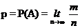
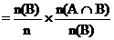

STAM101 :: Lecture 06 ::Probability – Basic concepts-trial- event-equally likely- mutually exclusive

–independent event, additive and multiplicative laws. Theoretical distributions- discrete and continuous distributions, Binomial distributions-properties
Probability
The concept of probability is difficult to define in precise terms. In ordinary language, the word probable means likely (or) chance. Generally the word, probability, is used to denote the happening of a certain event, and the likelihood of the occurrence of that event, based on past experiences. By looking at the clear sky, one will say that there will not be any rain today. On the other hand, by looking at the cloudy sky or overcast sky, one will say that there will be rain today. In the earlier sentence, we aim that there will not be rain and in the latter we expect rain. On the other hand a mathematician says that the probability of rain is ‘0’ in the first case and that the probability of rain is ‘1’ in the second case. In between 0 and 1, there are fractions denoting the chance of the event occurring. In ordinary language, the word probability means uncertainty about happenings.In Mathematics and Statistics, a numerical measure of uncertainty is provided by the important branch of statistics – called theory of probability. Thus we can say, that the theory of probability describes certainty by 1 (one), impossibility by 0 (zero) and uncertainties by the co-efficient which lies between 0 and 1.
Trial and Event An experiment which, though repeated under essentially identical (or) same conditions does not give unique results but may result in any one of the several possible outcomes. Performing an experiment is known as a trial and the outcomes of the experiment are known as events.
Example 1: Seed germination – either germinates or does not germinates are events.
- In a lot of 5 seeds none may germinate (0), 1 or 2 or 3 or 4 or all 5 may germinate.
Probability
Sample space (S)
A set of all possible outcomes from an experiment is called sample space. For example, a set of five seeds are sown in a plot, none may germinate, 1, 2, 3 ,4 or all five may germinate. i.e the possible outcomes are {0, 1, 2, 3, 4, 5. The set of numbers is called a sample space. Each possible outcome (or) element in a sample space is called sample point.
Exhaustive Events
The total number of possible outcomes in any trial is known as exhaustive events (or) exhaustive cases.
Example
- When pesticide is applied a pest may survive or die. There are two exhaustive cases namely ( survival, death)
- In throwing of a die, there are six exhaustive cases, since anyone of the 6 faces
1, 2, 3, 4, 5, 6 may come uppermost. - In drawing 2 cards from a pack of cards the exhaustive number of cases is 52C2, since 2 cards can be drawn out of 52 cards in 52C2 ways
Trial |
Random Experiment |
Total number of trials |
Sample Space |
(1) |
One pest is exposed to pesticide |
21=2 |
{S,D} |
(2) |
Two pests are exposed to pesticide |
22=4 |
{SS, SD, DS, DD} |
(3) |
Three pests are exposed to pesticide |
23=8 |
{SSS, SSD, SDS, DSS, SDD, DSD,DDS, DDD |
(4) |
One set of three seeds |
41= 4 |
{0,1,2,3} |
(5) |
Two sets of three seeds |
42=16 |
{0,1},{0,2},{0,3} etc |
Favourable Events
The number of cases favourable to an event in a trial is the number of outcomes which entail the happening of the event.
Example
- When a seed is sown if we observe non germination of a seed, it is a favourable event. If we are interested in germination of the seed then germination is the favourable event.
Mutually Exclusive Events
Events are said to be mutually exclusive (or) incompatible if the happening of any one of the events excludes (or) precludes the happening of all the others i.e.) if no two or more of the events can happen simultaneously in the same trial. (i.e.) The joint occurrence is not possible.
Example
- In observation of seed germination the seed may either germinate or it will not germinate. Germination and non germination are mutually exclusive events.
Equally Likely Events
Outcomes of a trial are said to be equally likely if taking in to consideration all the relevant evidences, there is no reason to expect one in preference to the others. (i.e.) Two or more events are said to be equally likely if each one of them has an equal chance of occurring.
Independent Events
Several events are said to be independent if the happening of an event is not affected by the happening of one or more events.
Example
- When two seeds are sown in a pot, one seed germinates. It would not affect the germination or non germination of the second seed. One event does not affect the other event.
Dependent Events
If the happening of one event is affected by the happening of one or more events, then the events are called dependent events.
Example
If we draw a card from a pack of well shuffled cards, if the first card drawn is not replaced then the second draw is dependent on the first draw.
Note: In the case of independent (or) dependent events, the joint occurrence is possible.
Definition of Probability
Mathematical (or) Classical (or) a-priori Probability
If an experiment results in ‘n’ exhaustive cases which are mutually exclusive and equally likely cases out of which ‘m’ events are favourable to the happening of an event ‘A’, then the probability ‘p’ of happening of ‘A’ is given by
Note
- If m = 0 Þ P(A) = 0, then ‘A’ is called an impossible event. (i.e.) also by P(f) = 0.
- If m = n Þ P(A) = 1, then ‘A’ is called assure (or) certain event.
- The probability is a non-negative real number and cannot exceed unity (i.e.) lies between 0 to 1.
- The probability of non-happening of the event ‘A’ (i.e.) P(
 ). It is denoted by ‘q’.
). It is denoted by ‘q’.
P () =
Þ q = 1 – p
Þ p + q = 1
(or) P (A) + P ( ) = 1.
) = 1.
Statistical (or) Empirical Probability (or) a-posteriori Probability
If an experiment is repeated a number (n) of times, an event ‘A’ happens ‘m’ times then the statistical probability of ‘A’ is given by

Axioms for Probability
- The probability of an event ranges from 0 to 1. If the event cannot take place its probability shall be ‘0’ if it certain, its probability shall be ‘1’.
Let E1, E2, …., En be any events, then P (Ei) ³ 0.
- The probability of the entire sample space is ‘1’. (i.e.) P(S) = 1.
Total Probability,
- If A and B are mutually exclusive (or) disjoint events then the probability of occurrence of either A (or) B denoted by P(AUB) shall be given by
P(AÈB) = P(A) + P(B)
P(E1ÈE2È….ÈEn) = P (E1) + P (E2) + …… + P (En)
If E1, E2, …., En are mutually exclusive events.
Example 1: Two dice are tossed. What is the probability of getting (i) Sum 6 (ii) Sum 9?
Solution
When 2 dice are tossed. The exhaustive number of cases is 36 ways.
(i) Sum 6 = {(1, 5), (2, 4), (3, 3), (4, 2), (5, 1)}
\ Favourable number of cases = 5
P (Sum 6) =
(ii) Sum 9 = {(3, 6), (4, 5), (5, 4), (6, 3)}
\ Favourable number of cases = 4
P (Sum 9) = =
Example 2: A card is drawn from a pack of cards. What is a probability of getting (i) a king (ii) a spade (iii) a red card (iv) a numbered card?
Solution
There are 52 cards in a pack.
One can be selected in 52C1 ways.
\ Exhaustive number of cases is = 52C1 = 52.
(i) A king
There are 4 kings in a pack.
One king can be selected in 4C1 ways.
\ Favourable number of cases is = 4C1 = 4
Hence the probability of getting a king =
(ii) A spade
There are 13 kings in a pack.
One spade can be selected in 13C1 ways.
\ Favourable number of cases is = 13C1 = 13
Hence the probability of getting a spade =
(iii) A red card
There are 26 kings in a pack.
One red card can be selected in 26C1 ways.
\ Favourable number of cases is = 26C1 = 26
Hence the probability of getting a red card =
(iv) A numbered card
There are 36 kings in a pack.
One numbered card can be selected in 36C1 ways.
\ Favourable number of cases is = 36C1 = 36
Hence the probability of getting a numbered card =
Example 3: What is the probability of getting 53 Sundays when a leap year selected at random?
Solution
A leap year consists of 366 days.
This has 52 full weeks and 2 days remained.
The remaining 2 days have the following possibilities.
(i) Sun. Mon (ii) Mon, Tues (iii) Tues, Wed (iv) Wed, Thurs (v) Thurs, Fri (vi) Fri, Sat (vii) Sat, Sun.
In order that a lap year selected at random should contain 53 Sundays, one of the 2 over days must be Sunday.
\ Exhaustive number of cases is = 7
\ Favourable number of cases is = 2
\ Required Probability is =
Conditional Probability
Two events A and B are said to be dependent, when B can occur only when A is known to have occurred (or vice versa). The probability attached to such an event is called the conditional probability and is denoted by P (A/B) (read it as: A given B) or, in other words, probability of A given that B has occurred.
If two events A and B are dependent, then the conditional probability of B given A is,
Theorems of Probability
There are two important theorems of probability namely,
- The addition theorem on probability
- The multiplication theorem on probability.
I. Addition Theorem on Probability
(i) Let A and B be any two events which are not mutually exclusive
P (A or B) = P (AÈB) = P (A + B) = P (A) + P (B) – P (AÇB) (or)
= P (A) + P (B) – P (AB)
Proof
(ii) Let A and B be any two events which are mutually exclusive
P (A or B) = P (AÈB) = P (A + B) = P (A) + P (B)
Proof
We know that, n (AÈB) = n (A) + n (B)
P (AÈB) =
=
=
P (AÈB) = P (A) + P (B)
Note
(i) In the case of 3 events, (not mutually exclusive events)
P (A or B or C) = P (AÈBÈC) = P (A + B + C)
= P (A) + P (B) + P (C) – P (AÇB) – P (BÇC) – P (AÇC) + P (AÇBÇC)
(ii) In the case of 3 events, (mutually exclusive events)
P (A or B or C) = P (AÈBÈC) = P (A + B + C) = P (A) + P (B) + P (C)
Example
Using the additive law of probability we can find the probability that in one roll of a die, we will obtain either a one-spot or a six-spot. The probability of obtaining a one-spot is 1/6. The probability of obtaining a six-spot is also 1/6. The probability of rolling a die and getting a side that has both a one-spot with a six-spot is 0. There is no side on a die that has both these events. So substituting these values into the equation gives the following result:
Finding the probability of drawing a 4 of hearts or a 6 or any suit using the additive law of probability would give the following:

There is only a single 4 of hearts, there are 4 sixes in the deck and there isn't a single card that is both the 4 of hearts and a six of any suit.
Now using the additive law of probability, you can find the probability of drawing either a king or any club from a deck of shuffled cards. The equation would be completed like this:
There are 4 kings, 13 clubs, and obviously one card is both a king and a club. We don't want to count that card twice, so you must subtract one of it's occurrences away to obtain the result.
II. Multiplication Theorem on Probability
(i) If A and B be any two events which are not independent, then (i.e.) dependent.
P (A and B) = P (AÇB) = P (AB) = P (A). P (B/A) (I)
= P (B). P (A/B) (II)
Where P (B/A) and P (A/B) are the conditional probability of B given A and A given B respectively.
Proof
Let n is the total number of events
n (A) is the number of events in A
n (B) is the number of events in B
n (AÈB) is the number of events in (AÈB)
n (AÇB) is the number of events in (AÇB)
P (AÇB) =
 P (AÇB) = P (A). P (B/A) (I)
P (AÇB) = P (A). P (B/A) (I)
P (AÇB)

 P (AÇB) = P (B). P (A/B) (II)
P (AÇB) = P (B). P (A/B) (II)
(ii) If A and B be any two events which are independent, then,
P (B/A) = P (B) and P (A/B) = P (A)
P (A and B) = P (AÇB) = P (AB) = P (A) . P (B)
Note
(i) In the case of 3 events, (dependent)
P (AÇBÇC) = P (A). P (B/A). P (C/AB)
(ii) In the case of 3 events, (independent)
P (AÇBÇC) = P (A). P (B). P (C)
Example
So in finding the probability of drawing a 4 and then a 7 from a well shuffled deck of cards, this law would state that we need to multiply those separate probabilities together. Completing the equation above gives:
Given a well shuffled deck of cards, what is the probability of drawing a Jack of Hearts, Queen of Hearts, King of Hearts, Ace of Hearts, and 10 of Hearts?
In any case, given a well shuffled deck of cards, obtaining this assortment of cards, drawing one at a time and returning it to the deck would be highly unlikely (it has an exceedingly low probability).
| Download this lecture as PDF here |